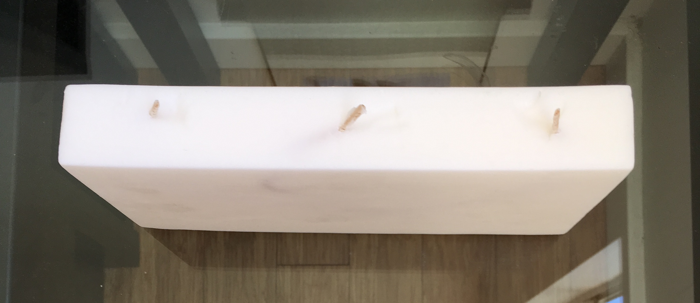
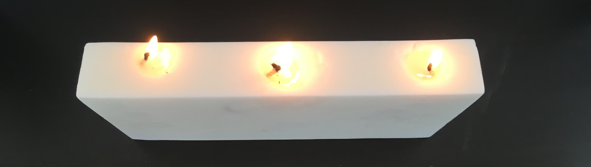
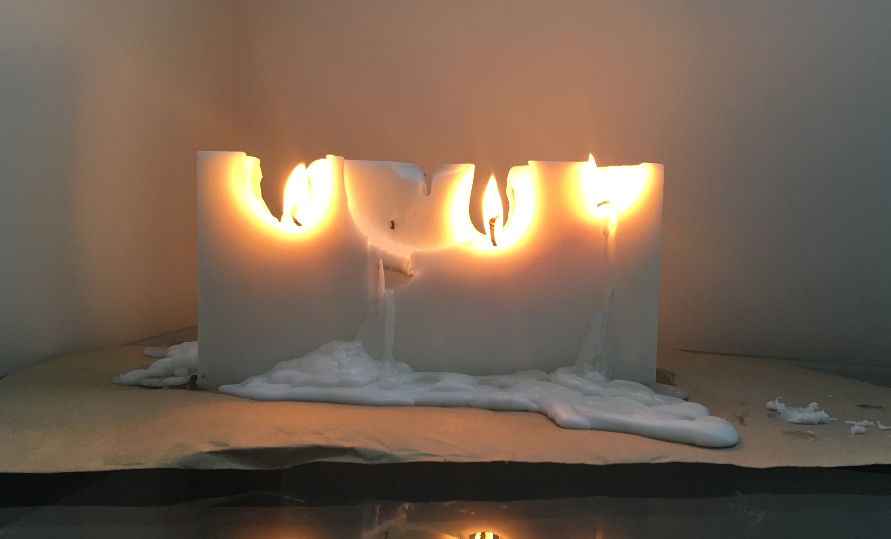
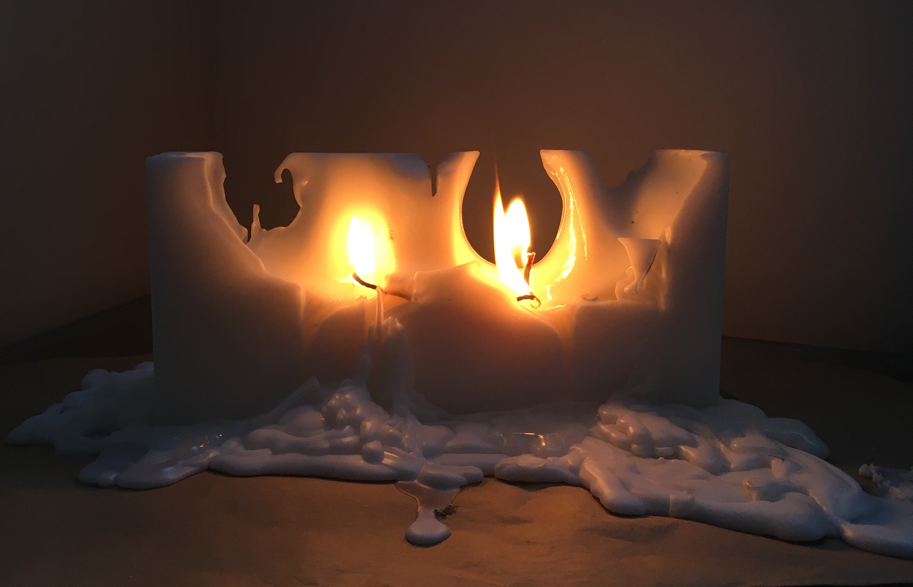
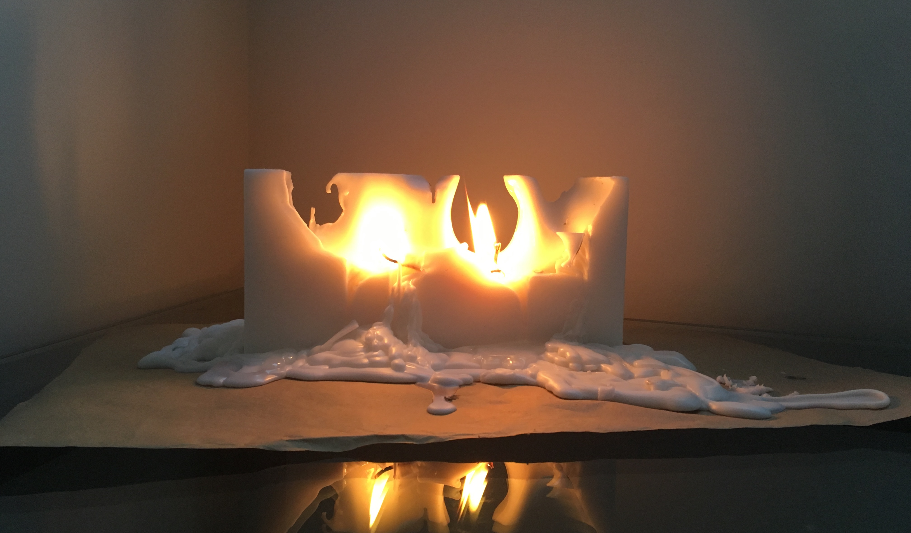
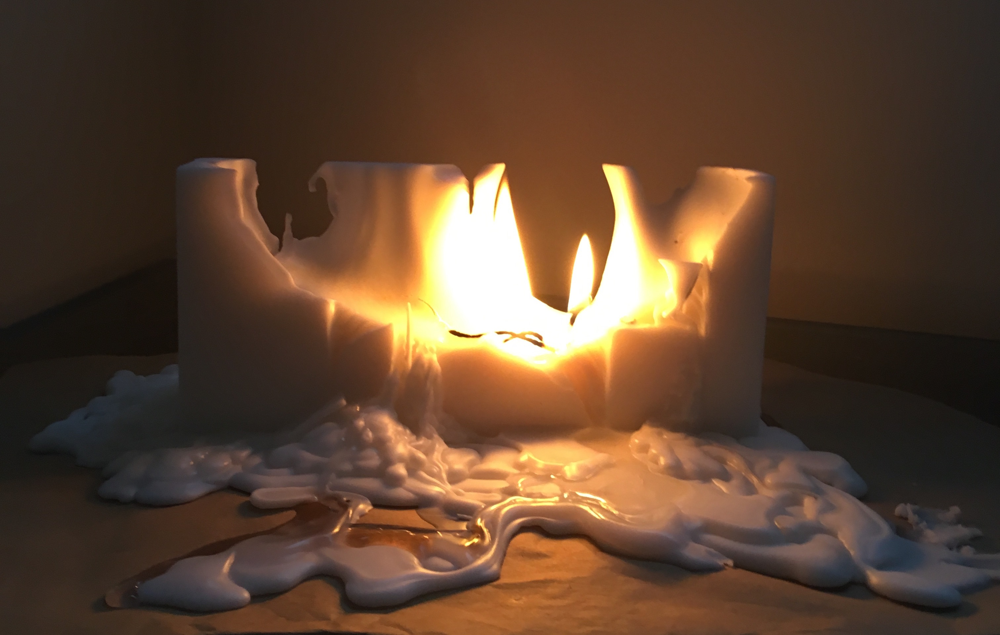

Sad Bravit Candle
A Bravit Candle is a style of candle with a wick that twists to move the flame in artistic patterns or shapes, getting more beautiful as the candle is burned. They are usually designed for use in important romantic dinners, like a proposal. I thought it would be fun to make a version of the candle that looks nice to start, but then ends up a sad scary mess, perhaps more for a dinner that ends with a break up rather than proposal.

The candle above began with paraffin wax, wick, a little bit of vanilla scent, and a mold I made out of wax paper and cardboard. I set the wick in the mold each at a different length and at some points twisted around each other to ensure a seemingly unpredictable and interesting flame pattern. Then I brought the wicks up through the top of the candle looking normal and only the slightest bit interesting.
When it cooled and I removed it from the mold, this is what came out!

Then it was time to light the candle and see what happens, definitely looking normal to start.

After about 30min, it was looking a little more chaotic, so i put it on some paper to keep the mess off the table.

A few hours in, it was looking a little more exciting.

even more exciting...

And finally, a big awesome mess!

